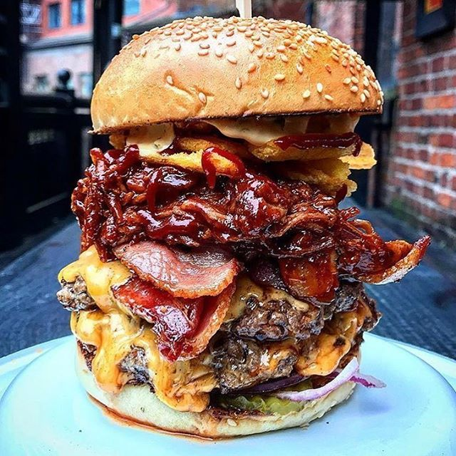

Odins Famous Jormungand Burgers

What is this beauty?
Meat cut from Jormungand himself. Theres so much to go around in this burger that it is known
across the realm. Litterally. Sink your tastebuds into this delight and replishin a yourself
after a hard day of raids.
Unlike Thors Lasagna, you will not want to share a burger such as this one with another. There is
plenty to go around, however we are viking. We can finish this literal beast of a burger.
Ingredients
- 3 pounds 80 to 85% lean ground beef
- 2 pieces white sandwich bread, crust removed and cut into 1/4 pieces
- 1/3 cup milk
- 1 teaspoon freshly ground black pepper
- 1 tablespoon Worcestershire sauce
- 2 tablespoons Ketchup
- 3 scallions, very finely sliced
- Hamburger Buns of choice
- Kosher Salt to taste (We recommend 2-1/2 teaspoons)
Steps
- Preheat flat top or grill to high heat. Oil.
- In a large bowl, mash the bread and milk together with a fork until it forms a chunky paste.
- Add the salt, pepper, garlic, Worcestershire sauce, and Ketchup. Mix well.
- Add the ground beef and scallions and break the meat up with your hands. Mix everything together.
- Divide the mixture into 8 equal portions and form compact balls. Flatten into 3/4 in patties 4-1/2 inches across.
- Grill the burgers, covered, until nicely browned on the first side (2-4 Minutes).
- Flip burgers and continue cooking for a few minutes until desired cook level is reached.